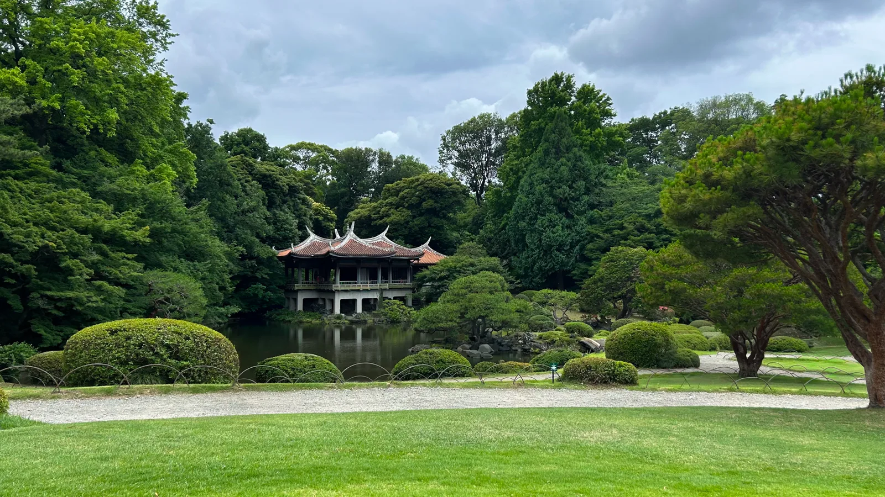
01 / 21
A pond, some grass, and a building
Shinjuku Gyoen, Tokyo
While in Tokyo, we ventured though a park. The flowers and fields where beautiful, however, I was drawn to the traditional japanese architecture.
Photo Essay · 21 photographs
Write an introduction to the photo essay here — where you went, why, and what you were looking for with the camera.

01 / 21
Shinjuku Gyoen, Tokyo
While in Tokyo, we ventured though a park. The flowers and fields where beautiful, however, I was drawn to the traditional japanese architecture.
02 / 21
Marui (OIOI) shopping mall, Tokyo
Night life in Tokyo sure was a sight to behold. Me and my friend group managed to squeeze into this mall just before it closed.
03 / 21
Nissan Crossing, Tokyo
The building that housed this car was uninteresting, but come on, how was I supposed to not take a photo of this car.
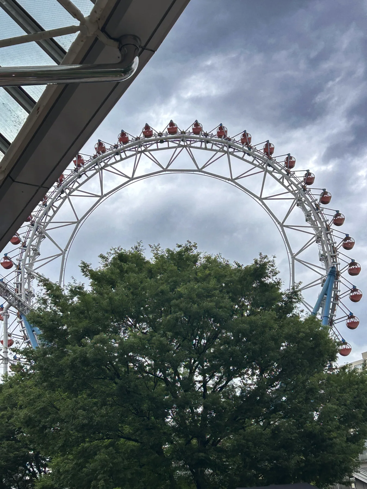
04 / 21
Tokyo Dome City
We saw the Tokyo Giants play, I enjoyed what I could but the seats were far too small for me.
05 / 21
Tokyo DisneySea
Every study abroad has to include a trip to a Disney theme park, and my study abroad chose Disney Sea.
06 / 21
Kyoto Tower
Most would consider this to be bad weather, but I love shooting in gray cloudy evenings. I believe that it helps the grays, blacks, and browns of the city really stand out.
07 / 21
Shibuya, Tokyo
Shibuya was probably good. I wouldn't know, I was over stimulated.
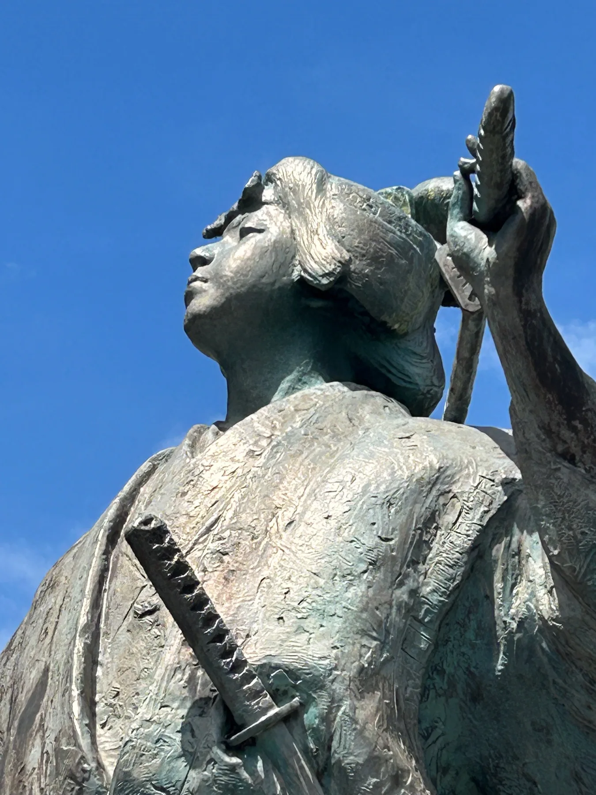
08 / 21
Kyoto
Ok, ok, I have some explaining. Durring my time in Japan there was this meme which used a panle from "The Boys" comic book. This satue was posed very similarly to that panel, and with the blue sky being so picturesque, I couldn't resist.
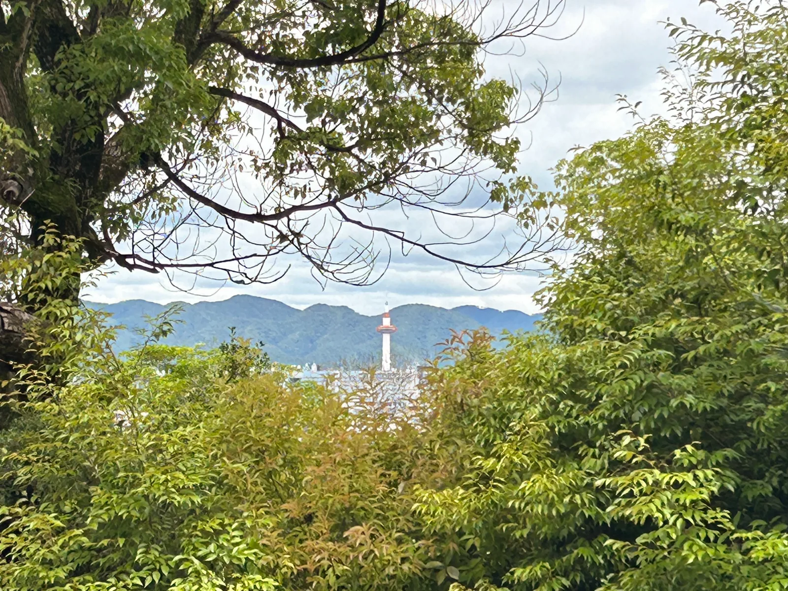
09 / 21
Fushimi Inari Shrine, Kyoto
Framing it one of my favorite things to do in the visual medium.
10 / 21
Kyoto
This was taken at a tour of an Japanese art university, and features one of my Texas Tech teacher. As he is not who you will be hiring, he will sadly go unnamed.
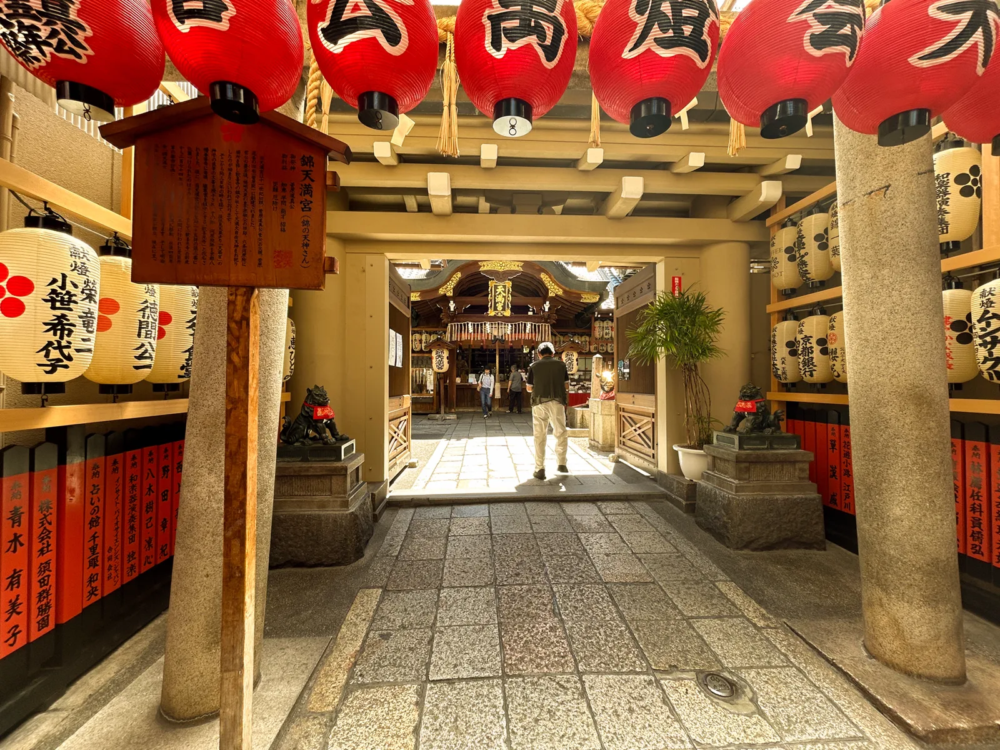
11 / 21
Nishiki Tenmangū Shrine, Kyoto
This shrine was cute, but I was already done with shrines by the 3rd one, and if I remember correctly, this was the 5th one we stopped by.
12 / 21
Nishiki Market, Kyoto
Walking through here was like walking through a state fair. I personally had locally grown fruits.
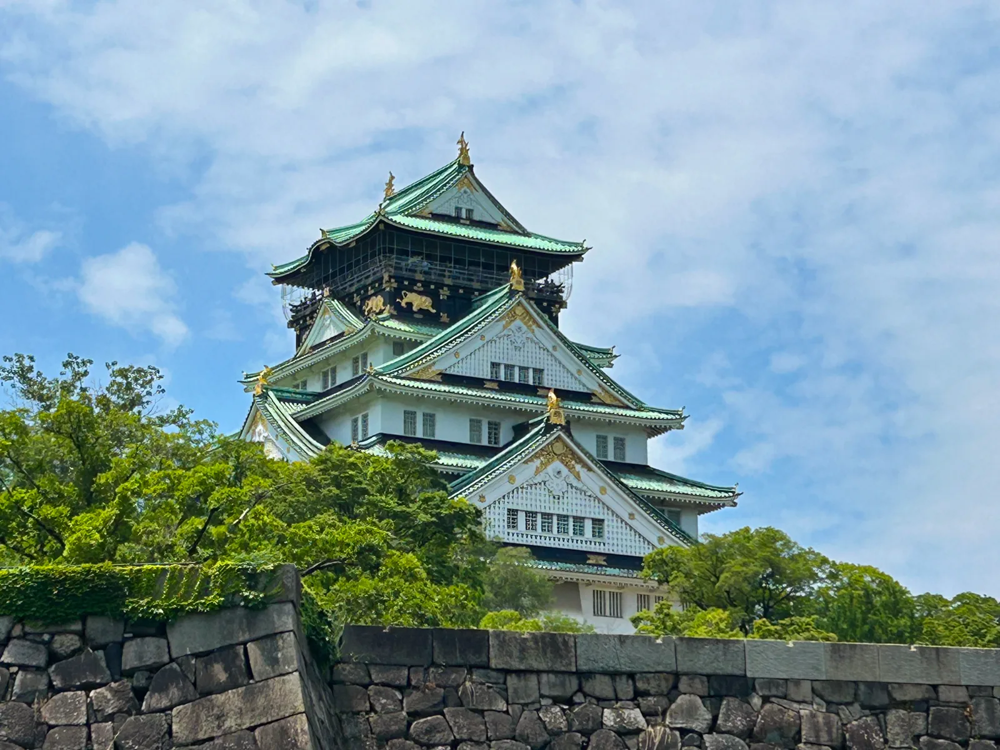
13 / 21
Osaka Castle, Osaka
This was definitly a beutiful castle to explore, but the walk there was dreadful. Would recommend.
14 / 21
Kyoto subway
A unique subway with no one inside, I pretty much had to take a picture. That, combos with the contrast of cold and warm colors, definitly one of my favorite photos of this Essay.
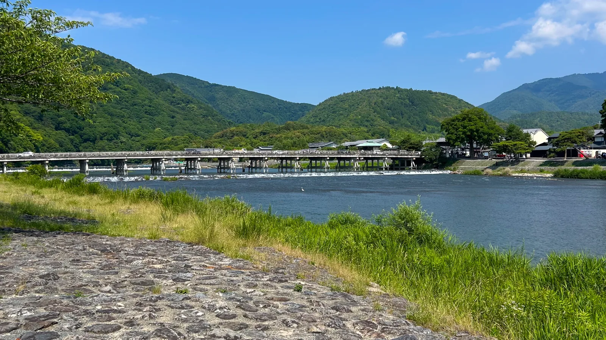
15 / 21
Arashiyama, Kyoto
Staring into the crystal clear river water, all I could think to myself was...I wonder if can fish here, despite, in truth, I don't even like fishing like that.
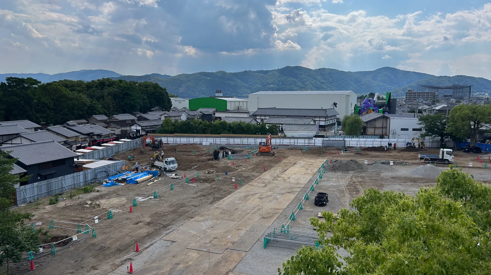
16 / 21
Toei Kyoto Studio Park
You know in Disney Parks, they do everything to ensure you don't see construction. At Toei Park, they had a guy guide guest to make sure they didn't get hit by the construction equipment.
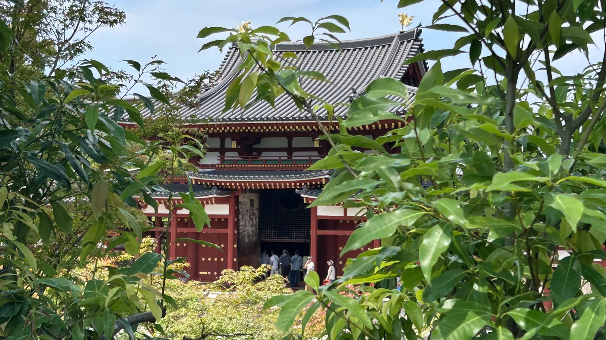
17 / 21
Kyoto
This was shrine number 12, and we didn't even get to go inside, we just walked around it, and looked at the pretty flowers.
18 / 21
Tea ceremony, Kyoto
Emperor Bradley Williams ruled wisely for 3 hours. After which he got shy and left. A million civilians perished.
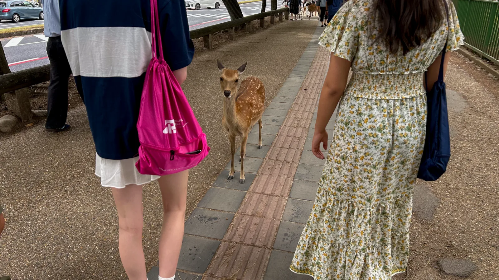
19 / 21
Nara
Growing up, my grandparents would take me to this nice mountain town in the west side of New Mexico. There, I saw the majestist deer. Since then I was entranced by their beauty, but would rarely see one due to their timidity. Then I went to the Town of Nara, which was famous for their deer population. There, I saw deers that were not timid. Since then, I have hated deers.
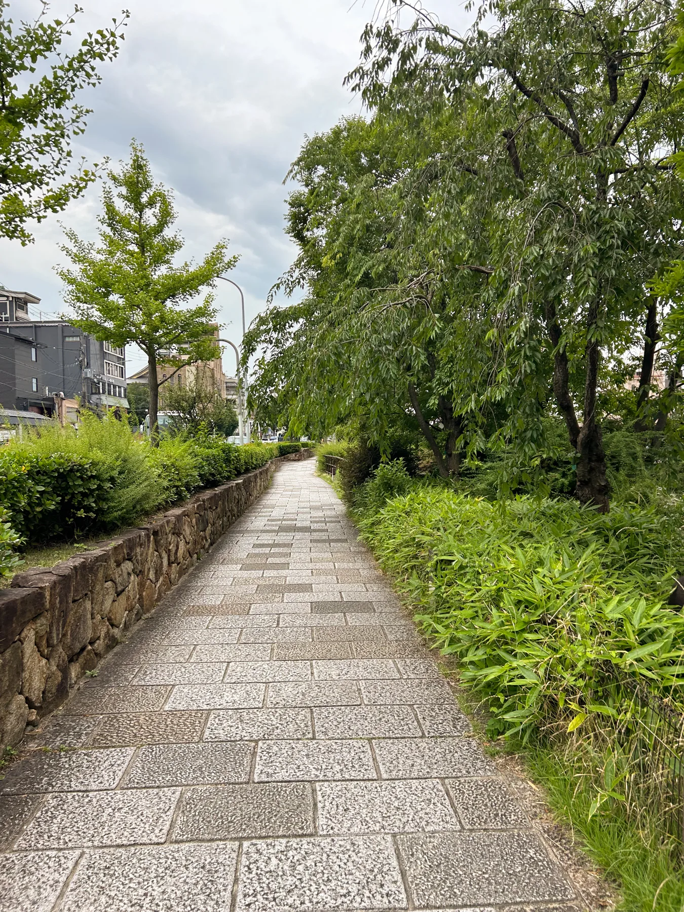
20 / 21
Riverside path
Another example of my love for cloudy skys. The green stands out so strong in this photo.
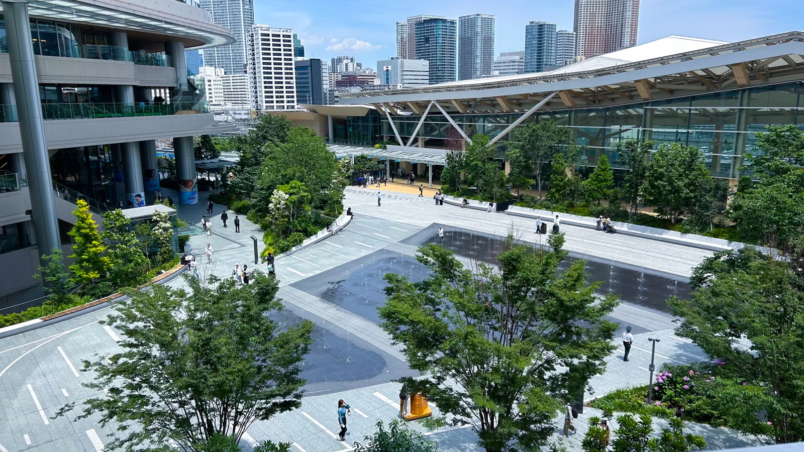
21 / 21
Takanawa Gateway, Tokyo
The last photo I took of Tokyo Japan. If you ask me, its my favorite.